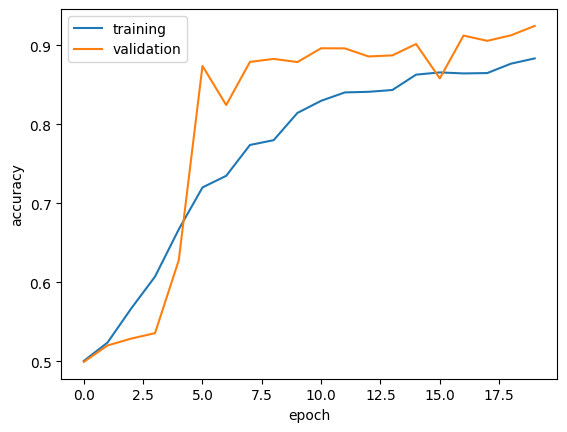
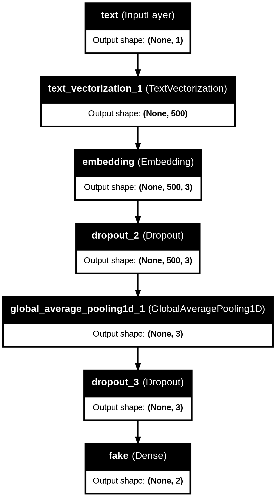
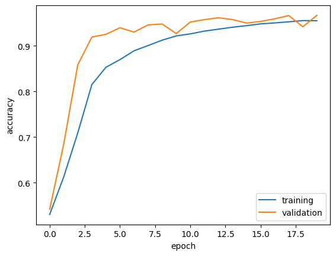
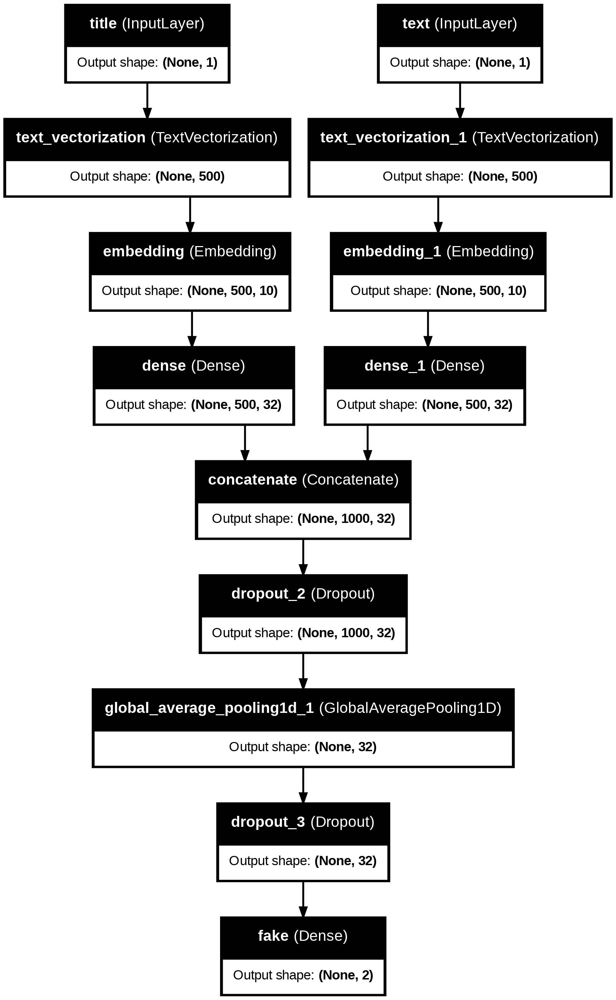
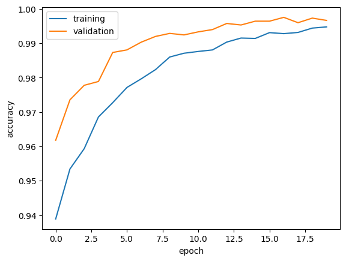

import nltk
nltk.download('stopwords')[nltk_data] Downloading package stopwords to /root/nltk_data...
[nltk_data] Package stopwords is already up-to-date!TrueThomas Nguyen
March 5, 2024
In this blog post, we will go how to create more tensorflow models. However, unlike the last blog post where we utilized a dataframe of images to do image classification, we are going to use a dataframe of articles and performing text classification to determine if an article would be considered “fake news”.
For this task we are going to use something called stopwords. These are widely used words such as “the”, “a”, “an”, etc. that we want to configure our search engine to disregard while indexing. Thus, we can do that by the following:
[nltk_data] Downloading package stopwords to /root/nltk_data...
[nltk_data] Package stopwords is already up-to-date!TrueNow let’s import the remaining libraries along with the data.
Requirement already satisfied: keras in /usr/local/lib/python3.10/dist-packages (3.0.5)
Requirement already satisfied: absl-py in /usr/local/lib/python3.10/dist-packages (from keras) (1.4.0)
Requirement already satisfied: numpy in /usr/local/lib/python3.10/dist-packages (from keras) (1.25.2)
Requirement already satisfied: rich in /usr/local/lib/python3.10/dist-packages (from keras) (13.7.1)
Requirement already satisfied: namex in /usr/local/lib/python3.10/dist-packages (from keras) (0.0.7)
Requirement already satisfied: h5py in /usr/local/lib/python3.10/dist-packages (from keras) (3.9.0)
Requirement already satisfied: dm-tree in /usr/local/lib/python3.10/dist-packages (from keras) (0.1.8)
Requirement already satisfied: ml-dtypes in /usr/local/lib/python3.10/dist-packages (from keras) (0.2.0)
Requirement already satisfied: markdown-it-py>=2.2.0 in /usr/local/lib/python3.10/dist-packages (from rich->keras) (3.0.0)
Requirement already satisfied: pygments<3.0.0,>=2.13.0 in /usr/local/lib/python3.10/dist-packages (from rich->keras) (2.16.1)
Requirement already satisfied: mdurl~=0.1 in /usr/local/lib/python3.10/dist-packages (from markdown-it-py>=2.2.0->rich->keras) (0.1.2)import os
os.environ["KERAS_BACKEND"] = "tensorflow"
import numpy as np
import pandas as pd
import tensorflow as tf
from tensorflow.keras import layers
from tensorflow.keras import losses
from tensorflow import keras
from keras import utils
import re
import string
from sklearn.model_selection import train_test_split
from sklearn.preprocessing import LabelEncoder
from sklearn.decomposition import PCA
from matplotlib import pyplot as plt
# Embedding visualizations
import plotly.express as px
import plotly.io as pio
pio.renderers.default = "iframe"
# Importing data
train_url = "https://github.com/PhilChodrow/PIC16b/blob/master/datasets/fake_news_train.csv?raw=true"
imported_data = pd.read_csv(train_url)
# Importing English stopwords
from nltk.corpus import stopwords
stop = stopwords.words('english')With our data imported and read in, let’s see what we are dealing with.
| Unnamed: 0 | title | text | fake | |
|---|---|---|---|---|
| 0 | 17366 | Merkel: Strong result for Austria's FPO 'big c... | German Chancellor Angela Merkel said on Monday... | 0 |
| 1 | 5634 | Trump says Pence will lead voter fraud panel | WEST PALM BEACH, Fla.President Donald Trump sa... | 0 |
| 2 | 17487 | JUST IN: SUSPECTED LEAKER and “Close Confidant... | On December 5, 2017, Circa s Sara Carter warne... | 1 |
| 3 | 12217 | Thyssenkrupp has offered help to Argentina ove... | Germany s Thyssenkrupp, has offered assistance... | 0 |
| 4 | 5535 | Trump say appeals court decision on travel ban... | President Donald Trump on Thursday called the ... | 0 |
| ... | ... | ... | ... | ... |
| 22444 | 10709 | ALARMING: NSA Refuses to Release Clinton-Lynch... | If Clinton and Lynch just talked about grandki... | 1 |
| 22445 | 8731 | Can Pence's vow not to sling mud survive a Tru... | () - In 1990, during a close and bitter congre... | 0 |
| 22446 | 4733 | Watch Trump Campaign Try To Spin Their Way Ou... | A new ad by the Hillary Clinton SuperPac Prior... | 1 |
| 22447 | 3993 | Trump celebrates first 100 days as president, ... | HARRISBURG, Pa.U.S. President Donald Trump hit... | 0 |
| 22448 | 12896 | TRUMP SUPPORTERS REACT TO DEBATE: “Clinton New... | MELBOURNE, FL is a town with a population of 7... | 1 |
22449 rows × 4 columns
For this dataset, we can see that each row represents an article. Within each row, we are given the title and the full text of each article as well as a boolean value called fake that denotes whether the article contains fake news, as determined by the authors of the paper above.
Once we have imported everything we needed, we can move on to creating the dataset, which we will accomplish by creating a function that takes in the dataframe as the parameter. In order to do that, there are a three things we want our function to execute: 1) making all the texts lowercase to prevent misinterpretation, 2) removing all the stopwords to improve efficiency, 3) constructing and returning a tf.data.Dataset that has two inputs (title, text) and one output fake. Thus, we can accomplish all of these with the following code:
def make_dataset(df):
"""
Creating a prepped tensorflow dataset from a dataframe
Input:
df = dataframe
Return:
tensorflow dataset with two inputs and one outputs
"""
# Removing stopwords
df['title'] = df['title'].apply(lambda x: ' '.join([word for word in x.split() if word not in (stop)]))
df['text'] = df['text'].apply(lambda x: ' '.join([word for word in x.split() if word not in (stop)]))
# Creating dataset
ds = tf.data.Dataset.from_tensor_slices((
{"title" : df[["title"]], "text" : df[["text"]]},
{"fake" : df["fake"]}
))
# Batching dataset (improve efficiency)
ds = ds.batch(100)
return dsWith this function, let’s create our dataset using our imported dataframe. In addition, because the dataframe is in a specific order, let’s randomize the order before we split it into training and validation sets.
dataset = make_dataset(imported_data)
dataset = dataset.shuffle(buffer_size = len(dataset)) # Shuffling order of dataset
train_size = int(0.8*len(dataset)) # Indicating size: 80% for training
val_size = int(0.2*len(dataset)) # Indicating size: 20% for validation
train = dataset.take(train_size) # Training set
val = dataset.skip(train_size).take(val_size) # Validation SetBefore we move on to our model components, let’s establish what our initial comparing condition is.
1 11740
0 10709
Name: fake, dtype: int64As we mentioned in the last blog post, the base rate refers to the accuracy of a baseline model that always predicts the most occurring output. Thus, our baseline model would always predict 1, or fake news, making our base rate 11740/(11740+10709)%, or 52.3%.
Next, let’s also implement text vectorization for our models later.
# Preprating a text vectorization layer for tf model
size_vocabulary = 2000
def standardization(input_data):
lowercase = tf.strings.lower(input_data)
no_punctuation = tf.strings.regex_replace(lowercase,
'[%s]' % re.escape(string.punctuation),'')
return no_punctuation
title_vectorize_layer = layers.TextVectorization(
standardize=standardization,
max_tokens=size_vocabulary, # only consider this many words
output_mode='int',
output_sequence_length=500)
title_vectorize_layer.adapt(train.map(lambda x, y: x["title"]))
text_vectorize_layer = layers.TextVectorization(
standardize=standardization,
max_tokens=size_vocabulary,
output_mode='int',
output_sequence_length=500)
text_vectorize_layer.adapt(train.map(lambda x, y: x["text"]))As mentioned above, the purpose of these models is to use the inputs title and text within the imported data and classify whether each article is considered either real or fake news, outputting a fake boolean of 0 or 1.
So first, we want to specify our model’s input shapes.
Now, we can start constructing the tensorflow models.
For our first model, we will use only the article title as an input.
We will begin by constructing the layers. For all of these models, we will be incorporating what’s called an embedding layer, which allows us to convert input info into a dense vector. In addition, because we aredealing with strings, we will want to incorporate a TextVectorization layer in order to map/transform text features into integer sequences. Thus, our code should look something like this
# TextVectorization layer to input_title
title_features = title_vectorize_layer(title_input)
# Embeddings
title_features = layers.Embedding(size_vocabulary, output_dim = 3, name="embedding")(title_features)
title_features = layers.Dropout(0.2)(title_features)
title_features = layers.GlobalAveragePooling1D()(title_features)
title_features = layers.Dropout(0.2)(title_features)
# Binary classifications
title_features = layers.Dense(2, activation='relu', name="fake")(title_features)Let’s visualize what our model looks like.
model1.compile(optimizer="adam",
loss = losses.SparseCategoricalCrossentropy(from_logits=True),
metrics=["accuracy"])
history = model1.fit(train,
validation_data=val,
epochs = 20,
verbose = True)Epoch 1/20
180/180 ━━━━━━━━━━━━━━━━━━━━ 11s 10ms/step - accuracy: 0.5083 - loss: 0.6927 - val_accuracy: 0.4991 - val_loss: 0.6931
Epoch 2/20
180/180 ━━━━━━━━━━━━━━━━━━━━ 1s 5ms/step - accuracy: 0.5156 - loss: 0.6920 - val_accuracy: 0.5200 - val_loss: 0.6861
Epoch 3/20
180/180 ━━━━━━━━━━━━━━━━━━━━ 1s 6ms/step - accuracy: 0.5633 - loss: 0.6845 - val_accuracy: 0.5287 - val_loss: 0.6765
Epoch 4/20
180/180 ━━━━━━━━━━━━━━━━━━━━ 1s 6ms/step - accuracy: 0.6161 - loss: 0.6768 - val_accuracy: 0.5356 - val_loss: 0.6657
Epoch 5/20
180/180 ━━━━━━━━━━━━━━━━━━━━ 2s 11ms/step - accuracy: 0.6592 - loss: 0.6653 - val_accuracy: 0.6278 - val_loss: 0.6515
Epoch 6/20
180/180 ━━━━━━━━━━━━━━━━━━━━ 1s 7ms/step - accuracy: 0.7231 - loss: 0.6502 - val_accuracy: 0.8740 - val_loss: 0.6368
Epoch 7/20
180/180 ━━━━━━━━━━━━━━━━━━━━ 2s 8ms/step - accuracy: 0.7261 - loss: 0.6352 - val_accuracy: 0.8244 - val_loss: 0.6180
Epoch 8/20
180/180 ━━━━━━━━━━━━━━━━━━━━ 2s 7ms/step - accuracy: 0.7695 - loss: 0.6139 - val_accuracy: 0.8791 - val_loss: 0.5950
Epoch 9/20
180/180 ━━━━━━━━━━━━━━━━━━━━ 2s 5ms/step - accuracy: 0.7824 - loss: 0.6004 - val_accuracy: 0.8829 - val_loss: 0.5719
Epoch 10/20
180/180 ━━━━━━━━━━━━━━━━━━━━ 1s 8ms/step - accuracy: 0.8152 - loss: 0.5767 - val_accuracy: 0.8789 - val_loss: 0.5545
Epoch 11/20
180/180 ━━━━━━━━━━━━━━━━━━━━ 1s 7ms/step - accuracy: 0.8255 - loss: 0.5575 - val_accuracy: 0.8964 - val_loss: 0.5303
Epoch 12/20
180/180 ━━━━━━━━━━━━━━━━━━━━ 1s 7ms/step - accuracy: 0.8436 - loss: 0.5371 - val_accuracy: 0.8962 - val_loss: 0.5128
Epoch 13/20
180/180 ━━━━━━━━━━━━━━━━━━━━ 1s 6ms/step - accuracy: 0.8425 - loss: 0.5216 - val_accuracy: 0.8860 - val_loss: 0.4936
Epoch 14/20
180/180 ━━━━━━━━━━━━━━━━━━━━ 3s 9ms/step - accuracy: 0.8469 - loss: 0.5032 - val_accuracy: 0.8873 - val_loss: 0.4769
Epoch 15/20
180/180 ━━━━━━━━━━━━━━━━━━━━ 1s 6ms/step - accuracy: 0.8682 - loss: 0.4827 - val_accuracy: 0.9018 - val_loss: 0.4556
Epoch 16/20
180/180 ━━━━━━━━━━━━━━━━━━━━ 1s 5ms/step - accuracy: 0.8638 - loss: 0.4675 - val_accuracy: 0.8582 - val_loss: 0.4510
Epoch 17/20
180/180 ━━━━━━━━━━━━━━━━━━━━ 1s 5ms/step - accuracy: 0.8583 - loss: 0.4544 - val_accuracy: 0.9124 - val_loss: 0.4233
Epoch 18/20
180/180 ━━━━━━━━━━━━━━━━━━━━ 1s 5ms/step - accuracy: 0.8596 - loss: 0.4434 - val_accuracy: 0.9058 - val_loss: 0.4086
Epoch 19/20
180/180 ━━━━━━━━━━━━━━━━━━━━ 1s 6ms/step - accuracy: 0.8759 - loss: 0.4213 - val_accuracy: 0.9128 - val_loss: 0.3888
Epoch 20/20
180/180 ━━━━━━━━━━━━━━━━━━━━ 1s 5ms/step - accuracy: 0.8823 - loss: 0.4100 - val_accuracy: 0.9247 - val_loss: 0.3757# we visualize our training history
plt.plot(history.history["accuracy"], label = "training")
plt.plot(history.history["val_accuracy"], label = "validation")
plt.gca().set(xlabel = "epoch", ylabel = "accuracy")
plt.legend()
The validation accuracy of model1 started at 49.9%% but hit peak of 92.5%, better than the baseline model by 40.2%.
For our second model, we will use only the article text as an input this time around.
The structure of our model will look the exact same as model1, except this time, for out text_vectorize_layer input parameter, we are going to use text_input rather than title_input. Thus our code will look like so:
# We begin construct our model's layers
text_features = text_vectorize_layer(text_input)
text_features = layers.Embedding(size_vocabulary, output_dim = 3, name="embedding")(text_features)
text_features = layers.Dropout(0.2)(text_features)
text_features = layers.GlobalAveragePooling1D()(text_features)
text_features = layers.Dropout(0.2)(text_features)
text_features = layers.Dense(2, activation='relu', name="fake")(text_features)
model2 = keras.Model(
# only using text
inputs = [text_input],
outputs = text_features
)Once again, let’s visualize and train our model.
# we visualize our model
utils.plot_model(model2, "output_filename.png",
show_shapes=True,
show_layer_names=True)
model2.compile(optimizer="adam",
loss = losses.SparseCategoricalCrossentropy(from_logits=True),
metrics=["accuracy"])
history2 = model2.fit(train,
validation_data=val,
epochs = 20,
verbose = True)Epoch 1/20
180/180 ━━━━━━━━━━━━━━━━━━━━ 3s 12ms/step - accuracy: 0.5218 - loss: 0.6885 - val_accuracy: 0.5418 - val_loss: 0.6711
Epoch 2/20
180/180 ━━━━━━━━━━━━━━━━━━━━ 2s 13ms/step - accuracy: 0.5843 - loss: 0.6687 - val_accuracy: 0.6849 - val_loss: 0.6439
Epoch 3/20
180/180 ━━━━━━━━━━━━━━━━━━━━ 2s 12ms/step - accuracy: 0.6715 - loss: 0.6363 - val_accuracy: 0.8587 - val_loss: 0.5951
Epoch 4/20
180/180 ━━━━━━━━━━━━━━━━━━━━ 2s 10ms/step - accuracy: 0.7953 - loss: 0.5863 - val_accuracy: 0.9193 - val_loss: 0.5277
Epoch 5/20
180/180 ━━━━━━━━━━━━━━━━━━━━ 2s 10ms/step - accuracy: 0.8478 - loss: 0.5275 - val_accuracy: 0.9253 - val_loss: 0.4646
Epoch 6/20
180/180 ━━━━━━━━━━━━━━━━━━━━ 4s 17ms/step - accuracy: 0.8666 - loss: 0.4667 - val_accuracy: 0.9398 - val_loss: 0.4078
Epoch 7/20
180/180 ━━━━━━━━━━━━━━━━━━━━ 4s 21ms/step - accuracy: 0.8877 - loss: 0.4186 - val_accuracy: 0.9302 - val_loss: 0.3664
Epoch 8/20
180/180 ━━━━━━━━━━━━━━━━━━━━ 2s 12ms/step - accuracy: 0.8967 - loss: 0.3782 - val_accuracy: 0.9461 - val_loss: 0.3276
Epoch 9/20
180/180 ━━━━━━━━━━━━━━━━━━━━ 2s 11ms/step - accuracy: 0.9098 - loss: 0.3468 - val_accuracy: 0.9480 - val_loss: 0.3012
Epoch 10/20
180/180 ━━━━━━━━━━━━━━━━━━━━ 3s 10ms/step - accuracy: 0.9219 - loss: 0.3175 - val_accuracy: 0.9269 - val_loss: 0.2823
Epoch 11/20
180/180 ━━━━━━━━━━━━━━━━━━━━ 2s 11ms/step - accuracy: 0.9278 - loss: 0.2921 - val_accuracy: 0.9522 - val_loss: 0.2574
Epoch 12/20
180/180 ━━━━━━━━━━━━━━━━━━━━ 3s 13ms/step - accuracy: 0.9315 - loss: 0.2717 - val_accuracy: 0.9576 - val_loss: 0.2328
Epoch 13/20
180/180 ━━━━━━━━━━━━━━━━━━━━ 2s 10ms/step - accuracy: 0.9386 - loss: 0.2576 - val_accuracy: 0.9616 - val_loss: 0.2175
Epoch 14/20
180/180 ━━━━━━━━━━━━━━━━━━━━ 3s 11ms/step - accuracy: 0.9387 - loss: 0.2415 - val_accuracy: 0.9577 - val_loss: 0.2089
Epoch 15/20
180/180 ━━━━━━━━━━━━━━━━━━━━ 2s 11ms/step - accuracy: 0.9412 - loss: 0.2297 - val_accuracy: 0.9500 - val_loss: 0.2087
Epoch 16/20
180/180 ━━━━━━━━━━━━━━━━━━━━ 2s 11ms/step - accuracy: 0.9473 - loss: 0.2211 - val_accuracy: 0.9536 - val_loss: 0.1980
Epoch 17/20
180/180 ━━━━━━━━━━━━━━━━━━━━ 3s 15ms/step - accuracy: 0.9483 - loss: 0.2103 - val_accuracy: 0.9593 - val_loss: 0.1839
Epoch 18/20
180/180 ━━━━━━━━━━━━━━━━━━━━ 2s 11ms/step - accuracy: 0.9545 - loss: 0.1974 - val_accuracy: 0.9664 - val_loss: 0.1704
Epoch 19/20
180/180 ━━━━━━━━━━━━━━━━━━━━ 2s 10ms/step - accuracy: 0.9555 - loss: 0.1873 - val_accuracy: 0.9420 - val_loss: 0.1790
Epoch 20/20
180/180 ━━━━━━━━━━━━━━━━━━━━ 3s 10ms/step - accuracy: 0.9511 - loss: 0.1885 - val_accuracy: 0.9669 - val_loss: 0.1576# we visualize our training history
plt.plot(history2.history["accuracy"], label = "training")
plt.plot(history2.history["val_accuracy"], label = "validation")
plt.gca().set(xlabel = "epoch", ylabel = "accuracy")
plt.legend()
The validation accuracy of model2 started at 54.2% but hit peak of 96.6%, which was better than the baseline model by 44.3%. In addition, model2 stabalized around 91% to 96% by the 4th epoch.
For our final model, we will use both the article title and the article text as input.
For this model, because we have two components, we are going to want to perform vectorization and embedding on them individually and then concatenating the output of the article title pipeline with the output of the article text pipeline. Once concatenation, we can perform use the same Dropout,FlobalAveragePooling1D, and Dense layers as the previous models, making our code look like so:
# Vectorization
title_features = title_vectorize_layer(title_input)
text_features = text_vectorize_layer(text_input)
# Embedding
title_embedding = layers.Embedding(size_vocabulary, 10)
text_embedding = layers.Embedding(size_vocabulary, 10)
title_features = title_embedding(title_features)
text_features = text_embedding(text_features)
title_features = layers.Dense(32, activation='relu')(title_features)
text_features = layers.Dense(32, activation='relu')(text_features)
# main layers
main = layers.concatenate([title_features, text_features], axis = 1)
main = layers.Dropout(0.2)(main)
main = layers.GlobalAveragePooling1D()(main)
main = layers.Dropout(0.2)(main)
main = layers.Dense(2, activation='relu', name = 'fake')(main)For the last time, let’s visualize and train:
# we visualize our model
utils.plot_model(model3, "output_filename.png",
show_shapes=True,
show_layer_names=True)
model3.compile(optimizer="adam",
loss = losses.SparseCategoricalCrossentropy(from_logits=True),
metrics=["accuracy"])
history3 = model3.fit(train,
validation_data=val,
epochs = 20,
verbose = True)Epoch 1/20
180/180 ━━━━━━━━━━━━━━━━━━━━ 5s 17ms/step - accuracy: 0.9344 - loss: 0.2223 - val_accuracy: 0.9618 - val_loss: 0.1554
Epoch 2/20
180/180 ━━━━━━━━━━━━━━━━━━━━ 5s 15ms/step - accuracy: 0.9498 - loss: 0.1773 - val_accuracy: 0.9736 - val_loss: 0.1209
Epoch 3/20
180/180 ━━━━━━━━━━━━━━━━━━━━ 5s 15ms/step - accuracy: 0.9571 - loss: 0.1462 - val_accuracy: 0.9778 - val_loss: 0.1043
Epoch 4/20
180/180 ━━━━━━━━━━━━━━━━━━━━ 3s 15ms/step - accuracy: 0.9675 - loss: 0.1208 - val_accuracy: 0.9789 - val_loss: 0.0886
Epoch 5/20
180/180 ━━━━━━━━━━━━━━━━━━━━ 5s 27ms/step - accuracy: 0.9712 - loss: 0.1055 - val_accuracy: 0.9873 - val_loss: 0.0623
Epoch 6/20
180/180 ━━━━━━━━━━━━━━━━━━━━ 3s 16ms/step - accuracy: 0.9762 - loss: 0.0910 - val_accuracy: 0.9881 - val_loss: 0.0552
Epoch 7/20
180/180 ━━━━━━━━━━━━━━━━━━━━ 3s 15ms/step - accuracy: 0.9782 - loss: 0.0767 - val_accuracy: 0.9903 - val_loss: 0.0462
Epoch 8/20
180/180 ━━━━━━━━━━━━━━━━━━━━ 5s 16ms/step - accuracy: 0.9831 - loss: 0.0634 - val_accuracy: 0.9920 - val_loss: 0.0414
Epoch 9/20
180/180 ━━━━━━━━━━━━━━━━━━━━ 5s 15ms/step - accuracy: 0.9859 - loss: 0.0560 - val_accuracy: 0.9929 - val_loss: 0.0350
Epoch 10/20
180/180 ━━━━━━━━━━━━━━━━━━━━ 3s 15ms/step - accuracy: 0.9872 - loss: 0.0497 - val_accuracy: 0.9924 - val_loss: 0.0355
Epoch 11/20
180/180 ━━━━━━━━━━━━━━━━━━━━ 3s 15ms/step - accuracy: 0.9861 - loss: 0.0464 - val_accuracy: 0.9933 - val_loss: 0.0247
Epoch 12/20
180/180 ━━━━━━━━━━━━━━━━━━━━ 3s 19ms/step - accuracy: 0.9875 - loss: 0.0432 - val_accuracy: 0.9940 - val_loss: 0.0259
Epoch 13/20
180/180 ━━━━━━━━━━━━━━━━━━━━ 3s 15ms/step - accuracy: 0.9910 - loss: 0.0351 - val_accuracy: 0.9958 - val_loss: 0.0202
Epoch 14/20
180/180 ━━━━━━━━━━━━━━━━━━━━ 6s 19ms/step - accuracy: 0.9913 - loss: 0.0326 - val_accuracy: 0.9953 - val_loss: 0.0207
Epoch 15/20
180/180 ━━━━━━━━━━━━━━━━━━━━ 4s 15ms/step - accuracy: 0.9908 - loss: 0.0308 - val_accuracy: 0.9964 - val_loss: 0.0190
Epoch 16/20
180/180 ━━━━━━━━━━━━━━━━━━━━ 3s 15ms/step - accuracy: 0.9929 - loss: 0.0308 - val_accuracy: 0.9964 - val_loss: 0.0162
Epoch 17/20
180/180 ━━━━━━━━━━━━━━━━━━━━ 3s 15ms/step - accuracy: 0.9935 - loss: 0.0257 - val_accuracy: 0.9976 - val_loss: 0.0150
Epoch 18/20
180/180 ━━━━━━━━━━━━━━━━━━━━ 6s 17ms/step - accuracy: 0.9931 - loss: 0.0268 - val_accuracy: 0.9960 - val_loss: 0.0147
Epoch 19/20
180/180 ━━━━━━━━━━━━━━━━━━━━ 5s 15ms/step - accuracy: 0.9948 - loss: 0.0215 - val_accuracy: 0.9973 - val_loss: 0.0138
Epoch 20/20
180/180 ━━━━━━━━━━━━━━━━━━━━ 3s 16ms/step - accuracy: 0.9936 - loss: 0.0225 - val_accuracy: 0.9967 - val_loss: 0.0136plt.plot(history3.history["accuracy"], label = "training")
plt.plot(history3.history["val_accuracy"], label = "validation")
plt.gca().set(xlabel = "epoch", ylabel = "accuracy")
plt.legend()
Unlike the previous model which started off low and then climbed into the 90s value, the accuracy of model3 stabilized between 96.2% and 99.7% during training right from the first epoch, meaning it was better than the baseline model by 43.5% to 47.3% for all epochs.
Out of all three of our models, it is obvious that model3 using both article title and text was the best performing. Thus, we will now use model3 to see how well it performs on our unseen test data. Similar to before, we will use make_dataset() to import and read in the test data, creating a new dataset, which we will then evaluate our model with.
test_url = "https://github.com/PhilChodrow/PIC16b/blob/master/datasets/fake_news_test.csv?raw=true"
imported_test_data = pd.read_csv(test_url)
test = make_dataset(imported_test_data)
model3.evaluate(test, verbose=1)225/225 ━━━━━━━━━━━━━━━━━━━━ 2s 9ms/step - accuracy: 0.9946 - loss: 0.0186[0.017387792468070984, 0.9952336549758911]Great! model3 was able to get 99.4% accuracy on the new test dataset, meaning eat would be correct at detecting fake news above 99% of the time.
Because we used embedding layers in our models, we can visualize the embedding our model learned to see if there are any patterns in the words that our model found useful when distinguising news. To do this we will use a 2d embedding plot and then principal component analysis (PCA) to reduce dimensionality.
weights = model3.get_layer('embedding_1').get_weights()[0] # get weights from embedding layer
vocab = title_vectorize_layer.get_vocabulary() # get vocabulary from data prep
pca = PCA(n_components=2) # Initializing PCA
weights = pca.fit_transform(weights)
embedding_df = pd.DataFrame({
'word' : vocab,
'x0' : weights[:,0],
'x1' : weights[:,1]
})
fig = px.scatter(embedding_df,
x = "x0",
y = "x1",
size = [2]*len(embedding_df),
hover_name = "word")
fig.show()As you can see, “funds”, “concerns”, “financial”, and “debt” are clustered close by, which make sense in the topic of economics. We also we words like “socialism” and “corruption” next to each other on the right side of the scatterplot, which could be highlighting more right-leaning articles.